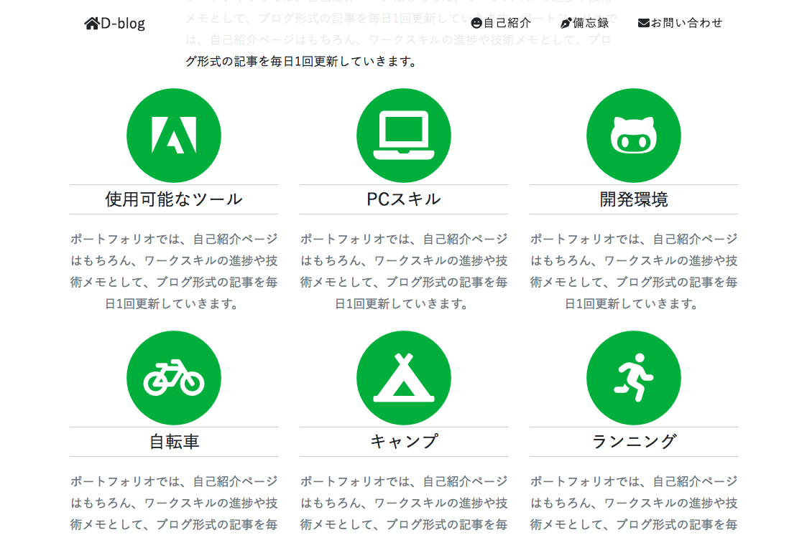

1ページビューのメリットとデメリット。

本ブログのように、構成要素が少ないサイトを構築する際、1ページビューで該当する コンテンツをスクロールさせて表示する手法が考えられます。 昨日の作業では、自己紹介ページを実際にTOPページに配置して、見映えを確認してみました。
◎TOPページ内に「自己紹介」のコンテンツを配置しても、特に問題はなさそうです。
ただし、配置するコンテンツのボリュームについては、ページ全体のバランスを見ながら
検討する必要があります。
キービジュアル→最新の投稿→自己紹介→お問い合わせの各々のコンテンツがnavbarのクリック動作で スクロールして表示される手法に見合った構成だと当初は考えていましたが、以下のような懸案事項も 同時に生じてきました。
×投稿ページがストックされてくると、投稿ページへのインデックスが1ページビュー内に収まらなくなる。
別ページを作成した場合、そこから「自己紹介」「お問い合わせ」へのジャンプが、
ユーザビリティ上好ましくない設定になってしまう。
4ページ構成＋キービジュアル部分のスライダー設定に仕様を決めました。
そもそも1ページビューでの構成を検討し始めたのは「わざわざ4ページ構成にするほど、
各々のページにボリュームがなさそう」という発想からきています。
B案の自己紹介ページの構成要素を再度見直してみました。キービジュアル下には
比較的文字数ある自己紹介文を、その下にはアイコン6つを配置して、Workスキルと
プライベートの趣味に関してコメント付きで作成していく案を考えてみました結果…。
4ページ構成案で制作していくことに決めました。
各ページのフォーマットまでは来週中に完成を目指していきたいと考えています。
本日のミニ備忘録
午前中に履歴書の志望動機を作成→川村さんにその場で添削をお願いすることができました。 ポートフォリオの制作、KPTシート作成、来週の目標設定と、本日行うべきタスクが日に日に増えていき、 変化に対応する機会も増えてきました。 来週の定期面談には、採用面接の想定質問に対する応答集を作成して、相談をしておかなければ…。